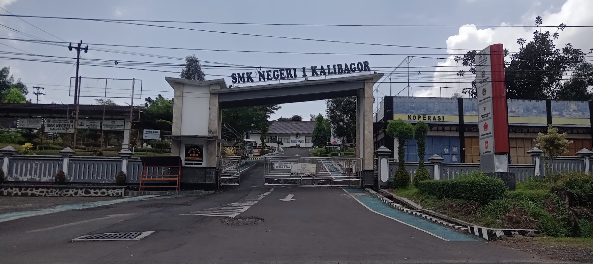

Selamat Datang di
e-Portofolio Praktik Pengalaman Lapangan
Pendidikan Profesi Guru (PPG) Gelombang 1 2026
Universitas Muhammadiyah Purwokerto
Unit Latihan: SMKN 1 Kalibagor
Program Pendidikan Profesi Guru (PPG)
Sinergi Kemendikdasmen dan Universitas Muhammadiyah Purwokerto dalam Menyiapkan Pendidik Profesional Masa Depan.
Program Pendidikan Profesi Guru (PPG) merupakan program pendidikan tinggi setelah program sarjana yang mempersiapkan peserta didik dengan persyaratan keahlian khusus dalam menjadi guru profesional.
Di bawah naungan Kementerian Pendidikan Dasar dan Menengah (Kemendikdasmen) dan diselenggarakan secara holistik oleh Universitas Muhammadiyah Purwokerto (UMP), program ini berkomitmen tinggi melahirkan pendidik berkualitas unggul, berintegritas, serta berdaya saing global.

Profil Sekolah Praktik: SMKN 1 Kalibagor
Mitra Pelaksanaan Praktik Pengalaman Lapangan (PPL) PPG UMP.

Tentang SMKN 1 Kalibagor
SMK Negeri 1 Kalibagor (dikenal sebagai Sekolah Pertanian / Gartenry) merupakan salah satu sekolah kejuruan unggulan di Kabupaten Banyumas yang mengedepankan pendidikan karakter, keterampilan vokasional, serta berwawasan lingkungan. Memiliki fasilitas lengkap, termasuk program semi-boarding untuk mendukung pembelajaran komprehensif.
Kabupaten Karanganyar
Bumi Intanpari di kaki Gunung Lawu, tempat kelahiran dan tanah kelahiran Mukti Muhtadi.
Wisata & Alam
Karanganyar terkenal dengan destinasi wisata alam megah seperti Perkebunan Teh Kemuning, Air Terjun Grojogan Sewu, Candi Cetho, Candi Sukuh, dan pesona kawasan Lereng Gunung Lawu.
Budaya & Tradisi
Memiliki kekayaan kebudayaan Jawa yang kental, festival seni daerah, kuliner khas seperti Kelinci Karanganyar dan Timus, serta keramahan masyarakat yang senantiasa dijunjung tinggi.
Siksorogo Lawu Ultra
Ajang event Trail Run terbesar se-Indonesia yang melintasi keindahan ekstrem lereng Gunung Lawu, Karanganyar. Menarik ribuan pelari nasional maupun internasional setiap tahunnya.
Hubungi Saya
Mari terhubung untuk kolaborasi, diskusi profesional, maupun informasi seputar PPL PPG.